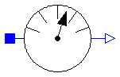
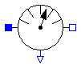
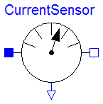

This package contains potential, voltage, and current sensors.
| Name | Description |
|---|---|
| PotentialSensor | Sensor to measure the potential |
| VoltageSensor | Sensor to measure the voltage between two pins |
| CurrentSensor | Sensor to measure the current in a branch |

model PotentialSensor "Sensor to measure the potential" extends Interfaces.AbsoluteSensor; SI.ElectricPotential phi "Absolute voltage potential"; equation p.i = 0; phi = p.v; phi = outPort.signal[1]; end PotentialSensor;

model VoltageSensor "Sensor to measure the voltage between two pins" extends Interfaces.RelativeSensor; SI.Voltage v "Voltage between pin p and n (= p.v - n.v)"; equation p.i = 0; n.i = 0; v = p.v - n.v; v = outPort.signal[1]; end VoltageSensor;

model CurrentSensor "Sensor to measure the current in a branch" extends Interfaces.RelativeSensor; SI.Current i "current in the branch from p to n"; equation p.v = n.v; p.i = i; n.i = -i; i = outPort.signal[1]; end CurrentSensor;